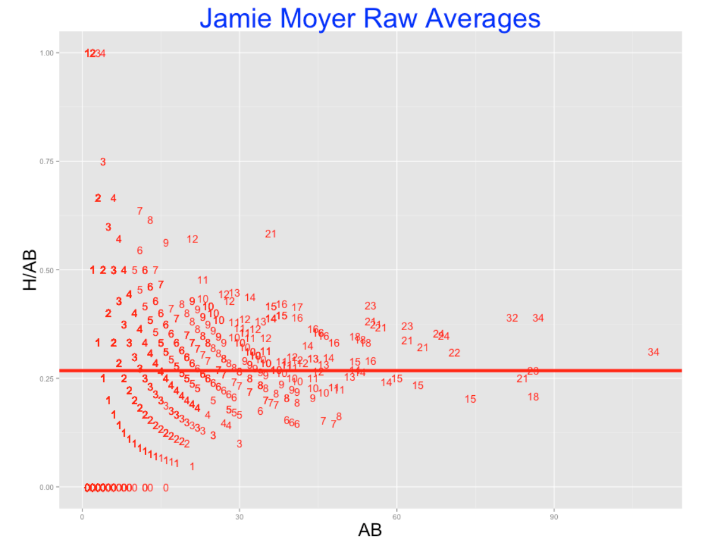
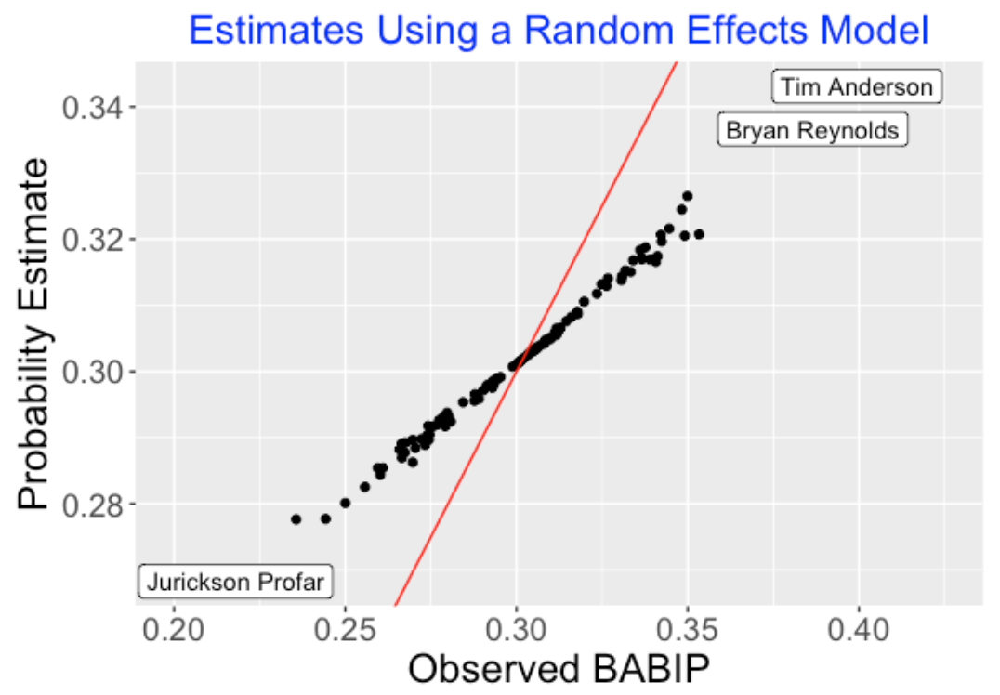

Multilevel Modeling in Baseball
1 Introduction
This article illustrates the application of various Bayesian multilevel models to address questions in baseball from blog posts from Exploring Baseball Data Using R (https://baseballwithr.wordpress.com/) First we list a few interesting baseball problems and use these questions to preview the types of multilevel models illustrated in the remainder of the article.
How does one make sense of MLB statistics after one month? (Section 2)
Baseball fans are fascinated with leaderboards that list the top hitters with respect to various measures such as batting average, on-base percentage, wOBA, etc. But these leaderboards are not that meaningful early in the season when the hitters have a small number of plate appearances. For example, here are the top 5 hitters in the 2021 season through the games of April 25.
| Player | AB | H | AVG | |
|---|---|---|---|---|
| Yermin Mercedes | 70 | 30 | 0.429 | |
| Mike Trout | 56 | 22 | 0.393 | |
| Brandon Nimmo | 59 | 23 | 0.390 | |
| Omar Narvaez | 54 | 21 | 0.389 | |
| Byron Buxton | 55 | 21 | 0.382 |
We see that Yermin Mercedes has a current .429 AVG which is impressive. But this is based on only 70 at-bats – what would we predict Mercedes’ batting average to be at the end of the season? Will these five hitters be the best hitters at the end of the season? Section 2 describes the use of an exchangeable model to simultaneously estimate the batting abilities of all hitters in a season. This fitted model also provides predictions of the hitters’ performance in the remainder of the season.
Is baseball more about hitting or more about pitching? (Section 3)
Baseball is a competition between the offense who is trying to score runs and the defense who is trying to prevent runs. Sometimes it seems that the pitchers are controlling the outcomes of games. Baseball people such as a great Connie Mack have said that baseball is dominated by pitching.
When there are different sources of variation of some variable such as runs scored, one can get a handle on the sizes of the sources of variation by the use of a non-nested multlevel model. In Section 3, we illustrate three different applications of this modeling, one focusing on outcomes of plate appearances a second on the runs scored in a game, and a third using the weighted OBA (wOBA) as the response of interest. We will see in the first application that some PA outcomes are more about the batter than the pitcher, and other outcomes are more influenced by the pitcher.
How does one interpret situational statistics? (Section 4)
In the media, one reads that one player is a clutch hitter in that he performs unusually well in clutch or important situations during a game. Another hitter might be said to be unsually good against pitchers from the same side, and a pitcher may be said to be good early in the season. Baseball sites such as Baseball Reference and FanGraphs will tabulate many of these breakdown measures where performances of hitters and pitchers are given for different situations.
When one discusses situational statistics, one needs to distinguish between a “bias” and an “ability split”. A bias is a type of situational effect that affects all players in the same way. For example, an umpire may favor the home team by his calling of balls and strikes. This behavior would likely affect all hitters in the same way – this type of affect is called a bias. In contrast, an ability split is the case where particular players will take advantage of a particular situation, such as ahead in the count, more than other players.
One can learn about the significance of a particular situation by use of a so-called “changing intercepts, changing slopes” multilevel model described in Section 4. One uses a regression model to describe how a particular measure of performance depends on the situation. Actually, when you have multiple players, there will be many regression models where the intercept and sope of the regression depend on the player. By simultaneously estimating all of these player regression coefficents one learns about the size of the situational effect and how this effect differs between players.
What age do baseball hitters achieve maximum performance? (Section 5)
There is a lot of activity during the “hot stove” MLB offseason where a number of players are free agents and teams are trying to sign these players to fill weaknesses in their rosters. In the 2022-23 offseason, the most discussed free agent is Aaron Judge who hit 63 home runs during the 2022 season. Judge would like a long-term contract but he will be 31 years old in the first month of the 2023 season. That raises the question – how many more years will Judge excel as a hitter? There are some recent examples of free agents such as Albert Pujols who was signed to a long-term contract by the Angels starting at age 32 and he had a relatively mediocre career for the Angel.
This question relates to the general issue of aging among baseball players. In particular, at what age does a hitter or pitcher achieve peak performance? Section 5 uses a multilevel level to address this issue. One represents the pattern of career performance of a player by a quadratic regression model. One can simultaneously estimate the regression parameters for the players by the multilevel model. This provides improved fits of the players trajectories and one can obtain estimates of the ages where they achieve peak performance.
Understanding home run talents (Section 6)
It can be difficult to predict future home run performance since it depends on understanding a hitter’s ability to hit home runs but all we have are measures of his home run performance. Section 6 describes the use of a multilevel model to understand the distribution of home run abilities for all players in a particular season.
Random Effects Models (Section 7)
Multilevel modeling is similar to the use of random effects in regression models. Section 7 describes the use of several random effects models to understand player-to-player variation in the batting average on balls in play.
Was Ty Cobb a True .400 Hitter (Section 8)
In 1982 Carl Morris used a multilevel model to explore the career AVG trajectory of Ty Cobb. We illustrate his analysis using a beta-binomial model where the means follow a quadratic curve. In part 2 of this section, we use this general approach and a normal/normal multilevel model to explore the career trajectories of wOBA for several Hall of Fame players of interest.
Other Posts/Articles (Section 9)
This section gives links to other related articles applying multilevel models to baseball data.
2 Exchangeable Modeling
2.1 Efron and Morris’ Baseball Study
2.1.1 Introduction
One of the famous small datasets in statistics is one contained in a paper in the Journal of the American Statistical Association by Brad Efron and Carl Morris where they use baseball data to illustrate the benefits of shrinkage estimation. In April of 1970, Brad and Carl looked at the Sunday paper where tables of baseball statistics were published and chose 18 players who had exactly 45 at-bats. The goal was to predict the batting average of these 18 players in the remainder of the 1970 season. I got introduced to this study by my adviser at Purdue and Efron and Morris’s research had a significant impact on my early research in statistics. Anyway, I thought it would be interesting to revisit this example by downloading Retrosheet data. This is a nice toy example to illustrate Bayesian random effects modeling and Bayesian prediction. Recently I interviewed Carl Morris in a Chance article where he gives some insight on the collection of this baseball dataset.
By the way, this dataset still is used in a number of Bayesian books to demonstrate exchangeable modeling. Specifically, Parent and Rivot’s book has an appendix on “The baseball players historical example” that discusses hierarchical analyses for this particular 1970 dataset.
2.1.2 Getting the Data
In a previous post, I presented a function for downloading Retrosheet play-by-play for a particular season. I read in this parse.retrosheet2.pbp*() function from my Github Gist site and use it to download the data for the 1970 season.
To find the players from Efron and Morris’s study, I collect the number of AB and H for all players through April 24 (I had found that Roberto Clemente had exactly 45 AB through April 24) and then collected all hitters who had between 44 and 46 AB. This gave me 17 hitters – they substantially overlap with the list of players used in Efron and Morris’s paper. (I was happy to see that Johnny Callison, a popular Phillies hitter, was included in my list.)
2.1.3 Fitting a Random Effects Model
Here is a relatively simple random effects model to learn about the batting abilities for these 17 players. The number of hits \(y_i\) for the \(i\)th batter is binomial with hit probability \(p_i\) (\(i\) goes from 1 to 17) and then the collection of hit probabilities \(p_1, ..., p_{17}\) come from a beta “talent” curve with shape parameters \(K \eta\) and \(K ( 1 - \eta)\). (I place weakly informative priors on the unknown parameters \(K\) and \(\eta\).) Here’s a picture of this model (the notation is a bit off, but it demonstrates the basic idea.)
Anyway, I have a function fit.model that will estimate \(K\) and \(\eta\) from this data. The estimates are \(K\) = 68 and \(\eta\) = .290. We use these to estimate the hitting probability for any player. For example, Max Alvis had 7 hits in 44 AB for a batting average of 0.159. To estimate Alvis’ hitting probability we essentially combine Alvis’ hitting data with an “average” player with 68 AB and batting average of .290.
Here’s a graph showing the observed batting averages and the estimates of the hitting probabilities that shrink or move these batting averages towards the overall average.
2.1.4 Prediction
The objective of this modeling is to predict the batting averages of these 17 players for the remainder of the season. I use the Retrosheet data to collect the number of AB for all players in the remainder of the season. There are two types of uncertainty in this prediction exercise. There is uncertainty in the true hitting probabilities for the players, and once we have values of the hitting probabilities, there is additional (binomial) uncertainty in the future number of hits for these players. For a specific player, we simulate values of his hitting probability (based on the posterior distribution of \(p_i\)) and then using these simulated values of the probability, we simulate the number of hits by binomial distributions. When we are done, we have 1000 values of the number of hits from the predictive distribution. I use density curves to display these predictive distribution of the players’ batting averages in the remainder of the 1970 season. These intervals might seem pretty wide, but then again we don’t have much data (only 45 AB) to learn about the batting abilities and there is a large chunk of the season remaining to be played.
This general approach can be used to predict the batting averages of a group of hitters at any point during the season. One nice feature of the Bayesian approach is that the posteriors for the hitting probabilities can be conveniently updated during the season with new data.
If you want to play with this method for other players and other seasons, all of the R code can be found on my Github Gist site.
2.2 A Shiny App to Predict Batting Rates
2.2.1 Introduction
Over many years, I’ve played with various Bayesian models to predict future performance of baseball players. In the Efron and Morris example, I have explained multilevel modeling in the context of predicting the final season batting averages of a group of hitters where we observe the performance of the hitters in 45 AB.
I wrote a Shiny app to illustrate Bayesian multilevel prediction using some interesting data, specifically Retrosheet play-by-play data for the 2019 season. I’ll focus on explaining the app. By playing with the app, this will provide some insight into the behavior of these predictions.
2.2.2 Scenario
Here’s the situation. I collect all of the individual at-bat outcomes for the 2019 season from Retrosheet. I choose a particular date in the middle of the season, breaking the data into “Train” (before the date) and “Test” (after the date) portions. I collect the batting averages of all players in the Train dataset who have at least a particular number of AB. The problem is to predict the batting averages for these players in the remainder of the 2019 season. Here are two plausible prediction rules
Observed. I just use the observed batting averages in the Train dataset to predict the batting average in the Test dataset. So for example, if a player has 30 hits in 100 AB in the first dataset, I will predict his batting average in the remainder of the season to be 30 / 100 = 0.300.
Multilevel. The multilevel prediction method partially pools the observed rates. The prediction shrinks or adjusts the player’s observed BA towards the average. This prediction estimate can be written as
\[ Prediction = \frac{AB}{AB + K} (Observed \, BA) + \frac{K}{AB + K} \eta\]
where \(\eta\) is an estimate at the average BA across all players and the estimate \(K\) tells me how much the player’s BA will be shrunk towards the average. I use a Bayesian multilevel model to estimate the values of \(\eta\) and \(K\).
I claim that the Multilevel method will do better than the Observed method in prediction. Specifically, if one measures the goodness of the prediction by the sum of squared prediction errors, one obtains a smaller value of this sum of squared errors using the Multilevel method.
2.2.3 The App - Inputs
This Shiny app illustrates this exercise with the 2019 Retrosheet data.
This app is currently live at https://bayesball.shinyapps.io/PredictingBattingRates
Here’s a snapshot of the Intro page.
There are three inputs to this app:
Choose the Outcome. By choosing H, one is predicting hit rates or batting averages. By choosing SO, you are predicting strikeout rates and by choosing HR, you are predicting home run rates.
Choose Date Breakpoint. One can decide where to break the Train and Test datasets. Here I have chosen July 1. If instead you want to work with a small amount of observed data, choose an earlier date, say, May 1.
Choose a Minimum At-Bats. You can require that you only consider players with at least 100 AB in the Train dataset. If you choose 0, then you are using all players with at least 1 AB. (You might want to choose a larger value of minimum AB so that pitchers are excluded.)
2.2.4 The App - Outputs
After you choose these inputs, the model will be fit and you will see the estimated values of \(K\) and \(\eta\) in the left panel. In this snapshot, \(\eta\) = 0.258, which means the Bayesian estimate shrinks the observed BA towards 0.258. Here \(K\) = 344.550 – since this is a relatively large value in comparison with the AB values, the observed BA is shrunk strongly towards the average.
The Rates tab shows the observed and predicted rates. Note the high variability of the observed rates – in the first part of the season (before July 1), we see a number of batting averages under the Mendoza line (under 0.200) and BA values over 0.350. In contrast the predicted BA’s all fall between 0.225 and 0.300.
At the bottom of the Shiny display, you see the sum of squares of prediction errors for both the Observed and Multilevel Estimates. As one would anticipate, the Multilevel Estimates does better than the Observed Estimates with a smaller prediction error – 0.856 is smaller than 0.982.
The Talents tab shows the estimated talent curve – this is a density estimate of the batting probabilities for these players. It is relatively common for a player to have a sub-0.200 average in the first few months of the season, but we see from this curve that it is unusual to have a batting probability (talent) below the Mendoza line. By the way, the shape parameters of this Beta talent curve are just \(K \eta\) and \(K (1 - \eta)\). If you plug in the estimates of \(K\) and \(\eta\), you’ll get the values 88.7 and 255.8 that you see in the title of the figure.
2.2.5 Playing with the App
What I like about this app is that it allows the user to play with the inputs and quickly see the outputs. The app gives insight on the performance of these multilevel shrinkage estimates in different situations. Here are some things for the interested reader to try.
Change the outcome from H to SO. You’ll see that one gets a different estimate at the parameter \(K\) that controls the shrinkage. A strikeout rate is much more ability-driven than a batting average. If you display the talent curve for the SO rate, you will see that there is a wider distribution of strikeout probabilities than we saw for hitting probabilities.
Change the outcome from H to HR. Now you are predicting home run rates in the remainder of the season. How does the shrinkage size compare to what you saw for H and SO?
Change the date. Try using a date breakpoint earlier in the season, say May 1, and see what impact this dataset with smaller AB values has on the predictions for the remainder of the season.
Change the minimum number of AB. Does the shrinkage change if you do the prediction for all batters (change the minimum AB to 0)?
2.2.6 See the Data and the Predictions
One might be interested in seeing the actual observed and predicted rates for all of the 2019 hitters. If you press the Download Rates button in the left panel, you can save all of the results (observed data and predictions for that particular choice of rate) as a cvs file that you can later import into R. Each of the rows in the dataset corresponds to a specific player identified by his Retrosheet id.
2.2.7 Closing Comments
If you wish to see a detailed description of the Bayesian multilevel model, see Chapter 10 of our Probability and Bayesian Modeling text . We explain the whole model and illustrate the use of JAGS in applying Markov chain Monte Carlo to simulate from the posterior of all unknown parameters.
In the Shiny app, I am using a “quick fit” of this model using a Laplace approximation function laplace.R from the LearnBayes package. It allows one to quickly see the impact of changing the inputs on the posterior estimates.
This Shiny app is currently the function PredictingBattingRates() in my ShinyBaseball package. The code for the app is contained in a single file app.R that can be found here.
2.3 Batter Pitcher Matchups
2.3.1 Introduction
There is much interest in batter-pitcher matchups. The media likes to report batters who have unusually good or poor batting averages against specific pitchers. That raises the obvious questions:
Is there any information in these batting averages? Many of these batting averages are based on small numbers of at-bats, so maybe we are just reporting interesting noise? This post says to be careful about interpreting this type of data. If there is some information in these batter/pitcher splits, how can we report these splits in some meaningful way?
In this post we use R and Retrosheet data to find batting averages of all hitters who face a particular pitcher of interest. I will focus on all hitters who faced Jamie Moyer who had a long pitching career. We see that these breakdowns are hard to interpret due to the different sample sizes. We apply some model smoothing to get reasonable estimates at the true batting averages.
2.3.2 Collecting the Retrosheet Data
I first collect Retrosheet play-by-play data for all seasons from 1960 through 2013. After downloading this data, I store all of this data in three R data frames – the “pbp.60.79” data frame contains play-by-play for the 1960 through 1979 seasons, a second “pbp.80.99” contains data for seasons 1980 through 1999, and a third “pbp.00.13” contains for seasons 2000-2013. I store this data into three workspaces and load these into R before using the function below. (By the way, 54 years of Retrosheet data represent about 8.9 million lines of plays and 99 variables, but R seems to handle that amount of data fine.) Currently, these R workspaces can be downloaded from my web server.
load(url("http://bayes.bgsu.edu/baseball/pbp.1960.1979.Rdata"))
load(url("http://bayes.bgsu.edu/baseball/pbp.1980.1999.Rdata"))
load(url("http://bayes.bgsu.edu/baseball/pbp.2000.2013.Rdata"))2.3.3 The Raw Batting Averages
Suppose we collect (H, AB) for all batters for a given pitcher and plot the batting averages H/AB against the AB. A typical example of this graph is given below – we plot the batting averages for all 1436 batters who faced Jamie Moyer. I use the number of hits as the plotting point in this graph.

Clearly, this graph is hard to interpret. There is much variability in the batting averages for players with small numbers of at-bats. There were players who had 1000 and 0 batting averages against Moyer, but certainly these weren’t the best or worst hitters against Jamie. We suspect that the best hitters are the ones who faced Moyer a number of times, but this cloud of chance variability is making the identification of these best hitters difficult.
2.3.4 Smoothing the Batting Averages
Fortunately, there is a straightforward way to make sense of this data. For all of the 1436 batters, we imagine that there are underlying hitting probabilities \(p_1, ..., p_{1436}\), and we’d like to estimate all of these probabilities. A reasonable model (a so-called random effects model) says that these probabilities come from a beta curve and we estimate the parameters of this curve from this data.
When we fit this model, there will be estimates that we call \(\eta\) and \(K\). The estimate \(\eta\) is a typical batting average, and \(K\) is an indication of the spread of the probabilities with smaller \(K\) values indicating more spread.
One good feature of this approach is that it gives us smoothed estimates at the hitting probabilities. A good estimate at the hitting probability for a particular player is given by \[ ESTIMATE = \frac{H + K \eta}{AB + K} \]
For example, Chris Gomez was 3 for 30 against Jamie Moyer in his career for a 3/30 = .100 batting average. From the Moyer data, we estimate \(\eta = 0.266\) and \(K = 194\). So I estimate Gomez’s true hitting probability against Moyer to be \[ \frac{3 + 194 \times 0.266}{30 + 194} = 0.244 \] This estimate smooths the raw average towards the overall Moyer batting average of 0.266.
Assuming you have all of the Retrosheet data available in your R workspace, the function batter.matchup.ggplot() will (1) find all of the (H, AB) data for all batters who face a specific pitcher, and (2) fit the random effects model, and give you the estimates of \(\eta\) and \(K\), and computes and graphs these smoothed estimates. The function can be found at my gist site here. I illustrate this function for Jamie Moyer. (Actually when you source this gist, you will load in all of the Retrosheet data into the workspace and then read in the function. After this function is sourced, you can apply batter.matchup.ggplot for different pitchers who played in the seasons 1960 through 2013.)
library(devtools)
source_gist("2b70b09a447a3d06188b")
B1 <- batter.matchup.ggplot("Jamie Moyer")Note that these smoothed estimates adjust the batting averages for the hitters with small values of AB heavily towards the average. In contrast, the smoothing effect is smaller for the players with large number of AB.
The output gives the estimates of \(\eta\) and \(K\) and ranks the hitters who had the largest (and smallest) probability estimate against Moyer. The data frame B1 contains the H, AB, and improved estimates for all hitters. The top and bottom 2 hitters are labeled in the graph.
### eta K
### 0.265939 194.454480
###
### BAT_ID AB H Batter.Name Estimate Num
###1 kotsm001 36 21 Mark Kotsay 0.3155202 1
###2 willb002 87 34 Bernie Williams 0.3045360 2
###3 delgc001 82 32 Carlos Delgado 0.3028095 3
###4 wrigd002 55 23 David Wright 0.2995057 4
###5 snowj001 21 12 J. T. Snow 0.2957146 5
###6 galaa001 41 17 Andres Galarraga 0.2918315 6
###
### BAT_ID AB H Batter.Name Estimate Num
###1 velar001 49 8 Randy Velarde 0.2452739 1431
###2 hernr002 41 6 Ramon Hernandez 0.2451133 1432
###3 nixoo001 21 1 Otis Nixon 0.2446597 1433
###4 bross001 46 7 Scott Brosius 0.2441753 1434
###5 gomec001 30 3 Chris Gomez 0.2437600 1435
###6 randj002 48 7 Joe Randa 0.2421611 14362.3.5 Reversals
We see that by this table, Mark Kotsay had the highest probability estimate against Moyer, and Joe Randa had the worst. We get some interesting reversals in this ranking. For example, who was better – David Wright with a 23/55 = 0.418 batting average or Carlos Delgado with an average of 32/82 = 0.390? Wright had a higher average, but Delgado’s performance was based on a larger number of AB – we have more information about Delgado’s true batting average. Our method makes an appropriate adjustment – Delgado’s estimate of 0.303 is actually higher than Wright’s estimate of 0.300.
This function is fun to apply and you are welcome to try it out for any pitcher of interest. One thing you learn is that for some pitchers, the variability between the hitting probabilities is small (I am thinking of Nolan Ryan) and other pitchers (think of Dennis Eckersley) had a high variability. Pitchers who are especially tough against batters on the same side will have small estimates of \(K\).
Once you have the Retrosheet data and the function, you can look at Eckersley and Ryan’s splits by typing:
B2 <- batter.matchup.ggplot("Dennis Eckersley")
B3 <- batter.matchup.ggplot("Nolan Ryan")The lesson here is that batter-pitcher matchups data are not just noise. There is variation between the true batting averages against a specific pitcher and one can measure this variation by a random-effects model. This allows us to smooth the raw batting averages in a reasonable way to learn about the good and bad matchups.
3 Nonnested Multilevel Models
3.1 Is Pitching 75% of Baseball?
3.1.1 Introduction
Baseball legend Connie Mack supposedly said that pitching was 75% of baseball. I’m not sure how Mack arrived at the number 75%, but a general problem of interest is to understand the batter/pitcher dynamics. When one looks at a plate appearance, how much of the outcome is determined by the hitter and how much is determined by the pitcher?
Noah Thurm recently wrote an interesting article on FanGraphs on understanding the attributes of successful pitchers from Statcast data. Here’s the opening three sentences of this article:
“Successful pitchers limit damage by minimizing the quality of contact they allow. How they can best do that remains up for debate, as pitchers tend to focus on some combination of deception, movement, and location to try and miss barrels. I propose that the most important pitcher-influenced variable to quality of contact is Launch Angle, and understanding and influencing it ought to be a priority for all pitchers.”
He provides evidence in this article that pitchers have relative little control over the exit velocity of batted balls – exit velocity is controlled by the hitter. But the pitcher has more control than the hitter on the launch angle and the better pitchers are the ones that can successfully influence this measurement.
Thurm’s use of the phrase “most important pitcher-influenced variable” raises a general question. Given a particular outcome of a plate appearance or a batted ball or a pitch, how much of the variability of that outcome is due to the batter and how much to the pitcher? Here I will describe how to answer this question using a basic statistical model for separating out variation of a particular response. This will allow us to compare the sizes of two sources of variability– one due to the pitcher and one due to the batter. Using this method, we will compare sources of variability across many outcomes of a plate appearance or a batted ball or a pitch.
3.1.2 A Non-Nested Random Effects Model
Let \(y\) denote some outcome of a plate appearance. If \(y\) is binary (0 or 1) with probability of success \(p\) then a “non-nested” random effects model has the form
\(\log \frac{p_i}{1-p_i} = \mu + \beta_i + \gamma_i\)
where \(\beta_i\) is the effect of the batter and \(\gamma_i\) is the effect of the pitcher. We assume that the batter effects \(\beta_1, ..., \beta_I\) come from a normal distribution with mean 0 and standard deviation \(\sigma_B\), and the pitcher effects \(\gamma_1, ..., \gamma_J\) are a sample from a normal distribution with mean 0 and standard deviation \(\sigma_P\).
When we fit this model to data, we focus on the estimates of \(\sigma_B\) and \(\sigma_P\) which tells us how much variability of the outcomes is due respectively to the batters and to the pitchers. We can compare these two standard deviation estimates by computing the ratio \(R = \sigma_B / \sigma_P\). If \(R > 1\), this tells us that the batters have more control over the different outcomes – if instead \(R < 1\), then the pitchers have more control over the outcome variation.
Here’s an example of quick fitting this model on R using the glmer() function in the lme4 package. We have the Retrosheet play-by-play files for the 2019 season, SO is an indicator of a strikeout and BAT_ID and PIT_ID are respectively codes for the batter and pitcher. I use the VarCorr() function to extract the standard deviation estimates and compute the ratio of standard deviations \(R\).
fit <- glmer(SO ~ (1 | PIT_ID) + (1 | BAT_ID),
data = d,
family = binomial)
(sds <- VarCorr(fit))
Groups Name Std.Dev.
BAT_ID (Intercept) 0.5016
PIT_ID (Intercept) 0.3118
(R <- 0.5016 / 0.3118)
[1] 1.608724In the old days of baseball, the pitchers were supposed to throw underhand – essentially they were just putting the ball in play. In this scenario, one would think that the batters controlled the variability in the outcomes of plate appearances. If we fit this model to batting outcomes from this old-time era, we should find that \(R > 1\). Of course, baseball has changed since those early years and pitchers are now trying to get the batters out, so it is less clear if the batters or the pitchers are currently contributing more to the variability of the PA outcome.
3.1.3 Outcomes of a Plate Appearance
Using Retrosheet play-by-play from the 2019 season, I considered the following outcomes of a plate appearance:
Strikeout (SO)
Walk (non-intentional) (BB)
Hit by pitch (HBP)
Home run (HR)
Hit on ball in-play (HIP)
Error (E)
For each model, I used the glmer() function from the lme4 package to fit this random effects model. From the standard deviation estimates, I computed the ratio of estimated standard deviations \(R\).
Let’s think aloud what we might expect to find from these different PA outcomes. Hitting home runs would seem to depend more on the hitter than the pitcher, so I would expect \(R > 1\). It is less clear for the other outcomes. Thinking about HBP, does a pitcher hit a batter with an errant pitch or does the batter position himself about the plate so he is more likely to get hit? Certain players like Ron Hunt and Chase Utley were noted for high HBP rates. What about an error? Here a fielding error would seem to depend on the defense and the batter and the pitcher would have little control over the likelihood of an error. So for the error outcome, I would anticipate that \(R = 1\).
3.1.4 Outcomes of a Pitch or Batted Ball
A similar type of analysis can be done for outcomes of a pitch or a batted ball. We’ll consider three outcomes:
Miss on a swing (Miss)
Exit velocity of a batted ball
Launch angle of a batted ball
(By the way, since both exit velocity and launch angle are continuous measurements, I will use a different random effects model where the response is normally distributed, but I’ll still be able to get standard deviation estimates and a value of \(R\).)
Remember Thurm in his FanGraphs article stated that a pitcher has much more control over launch angle than the exit velocity. So I would anticipate the value of \(R\) to be greater for exit velocity than for launch angle.
3.1.5 Results
I fit these models for the six PA outcomes and the three pitch outcomes described above. The figure below graphs and labels the values of the ratio \(R\). Remember small values of \(R\) are where more variability of the outcome is contributed by pitchers and large values \(R\) correspond to situations where more variability is due to batters.
We see that …
As expected, the ratio is close to 1 for errors.
Of all outcomes, the value of \(R\) is smallest for launch angle which means that pitcher variability contributes most to the variability of launch angles.
Batters contribute more of the variability for launch speeds and home run rates. Since high launch speeds contribute to home runs, this is not surprising.
It is interesting that walks have a \(R\) value close to one which means that pitchers and batters contribute equal components of variability of walks. Walking rates depends on both batter plate discipline and inaccurate pitches thrown by the pitcher.
3.1.6 Takeaways
This statistical approach clearly distinguishes exit velocity from launch angle – the variability in exit velocity is pretty much about the batter, but the pitcher has a lot of impact on the variability in launch angle. This supports the main point of the FanGraphs article.
This analysis impacts how one constructs a leader board. If the variability in a particular outcome is primarily due to variation in the hitters, then one would make a top-10 list for the hitters, not the pitchers. Based on this analysis, perhaps we should make up a top-10 list for pitchers who have the smallest percentage of optimal launch speeds on balls put into play. (Maybe that is something I can talk about in a future post.)
I’ve blogged about these type of models before in the context of home run hitting. In this particular post, I illustrate several types of random effect models. Not only does this model provide estimates of the variability in pitchers and hitters, it provides random effects estimates for the player abilities that are useful in predicting future performance.
3.2 Run Scoring – Offensive and Defensive Effects
3.2.1 Introduction
Watching the 2022 World Series, it seemed that the Astros and the Phillies had similar offensives, but the Astros had a deeper and more talented pitching staff, leading to their victory in 6 games in the Series. That makes one reflect about the relative importance of the offense and the defense (pitching and fielding) in baseball. Let’s focus on run scoring in a game.
How much of run scoring in a game is due to the offense and how much is attributed to the defense?
Tom Tango recently posted on this topic titled “Revenge of the Defense”. He focused on average numbers of runs scored and runs allowed for teams across seasons. One takeaway from Tom’s exploration is that the variation in run scoring, in recent seasons, is more about differences in team defenses than it is about difference in team offensives.
Thinking about this issue, I thought this run scoring issue would be a nice application of multilevel modeling. One looks at the runs scored in all games in a particular season. There are different sources of the variation in runs scored:
team to team variation in scoring runs
team to team variation in preventing runs by pitching and fielding
the home advantage
other factors such as the particular starting pitchers, effectiveness of relievers, etc.
In this post, I illustrate the use of the lme4 package to fit a non-nested multilevel model to run scoring. We illustrate this multilevel fit for all seasons from 1970 through 2021. By plotting the standard deviations of the offensive and defensive random effects, we can learn about the relative contributions of the offensive and defensive in run scoring over time. By adding a home/away effect to the model, we can explore the home field advantage and see how this has changed over seasons.
3.2.2 The Data and Random Effects Model
Using Retrosheet game log files, we collect the runs scored by both teams in all games during a particular season. Let the response \(y\) denote the square root of the runs scored by a batting team against a team defense during a game. (By the way, I am defining the response to be the square root of runs scored since that variable is more normally distributed than runs scored and the model assumes the response is normal). The basic model is
\(y = \mu + \alpha_{off} + \beta_{def} + \epsilon\)
where \(\alpha_{off}\) is the random effect of the batting team, \(\beta_{def}\) is the random effect of the defensive team and \(\epsilon\) is a random error team. We assume that the batting effects {\(\alpha_{off}\)} are normal with mean 0 and standard deviation \(\sigma_{off}\), the defensive effects {\(\beta_{def}\)} are N(0, \(\sigma_{def}\)) and the errors {\(\epsilon\)} are N(0, \(\sigma\)). This model can be fit using the lmer() function in the lme4 package by the single line of code:
fit <- lmer(RootRuns ~ (1 | OffensiveTeam) +
(1 | DefensiveTeam),
data = d12)I fit this model to the runs scored by both teams for all games in the 2021 season. I obtain the estimates of the standard deviations \(\sigma_{off}\) and \(\sigma_{def}\).
Season Offensive Defense
1 2021 0.08075034 0.1319501If one considers the variation in the square roots of runs scored for all games, we see that the estimates \(\sigma_{off} < \sigma_{def}\). So more of the variation in the root runs is explained by differences in the team defenses than differences in the team offensives.
3.2.3 Standard Deviation Estimates Over Seasons
I fit this model separately for all seasons between 1970 through 2021 (I omitted the short 2020 season). The following figure plots the season estimates of \(\sigma_{off}\) and \(\sigma_{def}\) as a function of the season. I have added smoothing curves to see the basic patterns. Around 1980, the sizes of the two sources of variation were about the same, but since the 1980 season, the defense standard deviation estimate \(\sigma_{def}\) is generally larger than the offense standard deviation estimate \(\sigma_{off}\).
One way to compare the two sources of variation is to look at the ratio of standard deviation estimates
\(Ratio = \frac{\sigma_{def}}{\sigma_{off}}\).
Here I have graphed this ratio as a function of the season. It seems clear from this graph that the pitching/defense source of variation is larger than the offensive source of variation in recent seasons.
3.2.4 Home Field Effect?
One way to extend this model is to include a term if the runs scored is by the home or away team.
\(y = \mu + \alpha_{off} + \beta_{def} + \gamma home + \epsilon\)
Here “home” is an indicator variable that is “yes” if the runs are scored by the home team, and “no” otherwise. I fit this new model for all seasons from 1970 through 2021. Here is a plot of the home effect estimates (the estimates of \(\gamma\)) across season. Although the size of the estimate varies across seasons, the general home effect appears positive (about the value 0.05) with no trend across seasons.
3.3 Estimating wOBAs
3.3.1 Introduction
In my most recent post, I talked about batter/pitcher matchups and described the use of a Shiny app that would explore the wOBA values for all batters against a specific pitcher, or all the wOBA values for all pitchers against a specific batter. There is a clear sample size issue in this exploration (wOBA values for small numbers of PAs tend to display high variability) and so I used a multilevel model to smooth these raw wOBA values. In this Shiny app, by viewing the smoothed wOBA values, one can see, for example, which batter is most effective against a pitcher of interest.
As an extension of this previous work, I thought it would be helpful to describe the use of a nonnested multilevel model. In this model, one writes the mean wOBA as a linear function of both a pitcher effect and a batter effect and the groups of pitcher effects and batter effects are assigned normal distributions. with unknown standard deviations. I will use the Stan platform and the brms package to simulate from the joint posterior distribution of all of the random effects and other model parameters.
What do we gain from fitting this model? Here are several useful things.
We learn how much of the variability in wOBA values is due to differences in pitcher abilities and how much of the variability is due to batter abilities.
By looking at the estimated random effects, one can get improved rankings of player performances. For example, Mike Trout had a .459 wOBA value in the 2021 season based on only 146 plate appearances. We will see that Trout is only 6st in the top-10 leaderboard in estimated wOBA ability. Trout’s estimated ability is smaller than other players who had lower raw wOBA values but much higher PA.
3.3.2 A Nonnested Multilevel Model
Let \(y_{ij}\) denote the wOBA value for the \(i\)th batter against the \(j\)th pitcher. We assume that \(y_{ij}\) is normal with mean \(\mu_{ij}\) and standard deviation \(\sigma\) where the mean is a constant \(\theta\) plus an effect \(BAT_i\) due to the batter and an effect \(PIT_j\) due to the pitcher.
\[\mu_{ij} = \theta + BAT_i + PIT_j\]
We assume the group of batter effects have a normal distribution with mean 0 and standard deviation \(\sigma_b\) and similarly the pitcher effects are normal with mean 0 and standard deviation \(\sigma_p\). We complete the model description by assigning weakly informative priors to the standard deviations \(\sigma, \sigma_b, \sigma_p\).
3.3.3 Fitting Model to 2021 Data
We use the Stan language with the interface provided by the brms package to simulate from the joint posterior distribution. The code is remarkably simple. Here WT is the wOBA weight assigned to the outcome of the PA and PIT_ID and BAT_ID are codes for the identities of the particular pitcher and batter.
fitB <- brm(WT ~ 1 + (1 | PIT_ID) + (1 | BAT_ID),
data = d2021a)Simulating four chains, each chain with 1000 warmups and 1000 iterations, takes a few hours on my Mac laptop. This is pretty impressive since our dataset has 187,170 rows and we are fitting a model with several thousand parameters. The output is a matrix of simulated draws of all parameters.
3.3.4 Sources of Variability
The model parameters \(\sigma_b\) and \(\sigma_p\) measure the variability in the batter effects and pitcher effects, respectively. Below I have displayed density estimates of the simulated draws of \(\sigma_b\) and \(\sigma_p\). Note that the location of the batter standard deviation posterior is higher indicating that most of the variability in wOBA values is due to the differences in batter abilities.
3.3.5 Random Effects
The model fit also provides estimates of the pitcher random effects \(PIT_i\) and the batter random effects \(BAT_j\) for all pitchers and batters. Below the top graph displays the observed wOBA values for all batters plotted against PA. Note the high variability in wOBA for small plate appearances. The bottom graph displays the posterior means of the \(BAT_j\). We note several things:
We no longer have a sample size variability issue. The estimated random effects smooth the observed wOBAs with more smoothing for batters who had small numbers of PA.
The blue smoothing line shows the general pattern of estimated random effects across PA. As one might expect, batters with higher PA tend to have positive random effects.
Here is a similar display for the pitchers. Looking at the bottom graph, we see that the pitchers who face at least 600 batters tend to have negative random effect estimates. Also the random effect estimates correct the high variability for small PA problems that we see in the raw wOBA estimates in the top graph.
3.3.6 Best Hitters and Pitchers
In a typical baseball leaderboard, one sets an arbitrary minimum number of AB or PA and then arranges the hitters from top to bottom among those who have exceeded the minimum number threshold. In this model fitting, one doesn’t need to set this minimum threshold. One estimates the random effects for all hitters and the high and low wOBA values for hitters with small PA are adjusted strongly towards the average. The below table displays the top 10 hitters with respect to estimated wOBA (random effect) for the 2021 season – “Estimate” refers to the observed wOBA and “mean” refers to the posterior mean of the random effect. There are some interesting reversals – for example, Brandon Belt has a higher estimated random effect than Byron Buxton despite the fact that Buxton had a higher observed wOBA.
Name PA Estimate mean
<chr> <int> <dbl> <dbl>
1 Bryce Harper 599 0.436 0.118
2 Juan Soto 654 0.430 0.116
3 Vladimir Guerrero 698 0.422 0.108
4 Fernando Tatis 546 0.406 0.0965
5 Shohei Ohtani 639 0.403 0.0911
6 Mike Trout 146 0.459 0.0883
7 Jesse Winker 485 0.404 0.0883
8 Ronald Acuna 360 0.414 0.0882
9 Brandon Belt 381 0.409 0.0882
10 Byron Buxton 254 0.419 0.0820Here is a similar table for the top 10 pitchers with respect to the estimated wOBA. It is not surprising that Jacob deGrom is number one. Again we see some reversals – for example, the model fit says that Corbin Burnes .232 wOBA value facing 657 hitters is more impressive than Josh Hader’s .200 wOBA facing only 224 hitters.
Name PA Estimate mean
<chr> <int> <dbl> <dbl>
1 Jacob deGrom 324 0.174 -0.0726
2 Corbin Burnes 657 0.232 -0.0584
3 Josh Hader 224 0.200 -0.0502
4 Max Scherzer 693 0.248 -0.0490
5 Brandon Woodruff 708 0.250 -0.0482
6 Walker Buehler 815 0.254 -0.0474
7 Emmanuel Clase 279 0.216 -0.0454
8 Zach Wheeler 849 0.255 -0.0452
9 Ranger Suarez 418 0.237 -0.0447
10 Blake Treinen 286 0.234 -0.04423.3.7 Some Comments
Got code? The R script for doing this exercise can be found on my Github Gist site. There are two relevant datasets, the Retrosheet play-by-play data for the 2021 season and the wOBA weights found on the FanGraphs site.
Good aspects of this model? I’ve demonstrated the use of this model in understanding the role of the pitcher and the batter in the outcome of the plate appearance. Also this model provides good estimates of batter and pitcher abilities that make appropriate adjustments for sample size. Also this fitted model can be used to obtain predictions of future performances. These predictions are relevant in the current scramble to assign contracts to free agents for the upcoming 2022 baseball season. For example, the Braves are likely not signing Freddie Freeman to a long-term contract since the Braves’ analysts are predicting that Freeman’s performance would be subpar in his late 30’s.
Other related posts? I’ve written many posts on the use of multilevel models in different contexts. In this post, I use a nonnested multilevel model for understanding variation in home run rates across batters and pitchers. In that 2019 post, I obtained a quick fit using the lme4 package. The fit here is better since we are simulating from the full posterior distributions.
3.3.8 Update: An Alternative Fitting Method
Here I have illustrated the use of MCMC simulation to fit the full Bayesian model. An alternative (and much speedier) maximum likelihood method of fitting this random effects model can be implemented using the lme4 package. Here’s the syntax using the lmer() function.
fitB <- lmer(WT ~ 1 + (1 | PIT_ID) + (1 | BAT_ID),
data = d2021a)One only obtains point estimates at the standard deviations \(\sigma_b\) and \(\sigma_p\) (I showed posterior densities of these parameters above). But the random effects batter and pitcher estimates using lmer() are very similar to the Bayesian posterior estimates. See the R code on my Github Gist site to see the use of this method to obtain these plots showed here.
4 Situation Splits (Changing Intercepts, Changing Slopes Model)
4.1 Count Effects
4.1.1 Introduction
In a previous post I introduced some situational hitting data, setting the stage for this post’s discussion of Bayesian multilevel models. Multilevel modeling is one of the big Bayesian success stories and it is a great way of implementing a regression model when there is a natural grouping of the data. By the way, the Economist currently has forecasts for the US 2020 Presidential election that are based on the use of dynamic Bayesian multilevel models on polling data.
Let’s review the basic situational data problem introduced in last week’s post. We’re interested in learning about the hitter’s advantage when he has a favorable count. Here we are going to compare “neutral” counts (0-0, 1-0, 1-1, 2-1, 3-2) with “behind” counts (0-1, 0-2, 1-2, 2-2) and see how a batter’s expected wOBA improves as he is in a neutral count as opposed to being behind in the count. (I decided on not using the “ahead” counts due to the small sample sizes.). We’re going to use a simple regression model to make this comparison and we’ll contrast three approaches:
Pool the Data. We can assume that all batters are the same with respect to their BABIP ability and their ability to take advantage of the favorable count situation. Then we’d fit a single regression model to all of the hitting data for a specific season.
Individual Estimates. On the other extreme, we can assume that batters differ with respect to their hitting ability and also their ability to take advantage of the count situation. Then we would fit separate regression models for all of the “regular” hitters in a season.
Multilevel Model Estimates. Last, we’ll consider a so-called “varying intercepts, varying slopes” multilevel model which states that the individual regression parameters come from a common prior distribution with unknown parameters. We’ll illustrate a “quick fit” to this multilevel model and show that we obtain better estimates at player hitting abilities and their abilities to take advantage of the count. We’ll learn about the variation in the players’ abilities and in the players’ situational abilities.
4.1.2 A Simple Regression Model
We focus how the expected wOBA depends on the count, focusing on the comparison between the neutral count and behind in the count situations.
Let \(y\) denote the expected wOBA. Define the “effect to be 0.5 if the batter is in a neutral count and \(−0.5\) if the batter is behind in the count. We assume that \(y\) is normal with mean \(\mu\) and standard deviation \(\sigma\) where the mean response \(\mu\) is written as
\[ \mu = \beta_0 + \beta_1 \, effect \]
In the neutral count, the mean is \(\mu_1 = \beta_0 + \beta_1 / 2\), and in the behind in the count situation, the mean is \(\mu_2 = \beta_0 - \beta_1 / 2\). So in this regression model \(\beta_0 = (\mu_1 + \mu_2) / 2\) represents the overall expected wOBA and \(\beta_1= \mu_1 - \mu_2\) represents the improvement (from behind-in-the-count to neutral-count) in expected wOBA.
4.1.3 A Pooled Data Estimate
Suppose we consider the group of batters in the 2019 season who had at least 200 balls in play, the “regular” players. The pooled estimate would fit a regression model to all of the balls in play for these players. Interpreting the coefficients below for the lm() fit, we see 0.372 is an average expected wOBA and hitters tend to hit 0.046 better when they are in a neutral count as opposed to behind in the count. The line segment in the graph displays the “regression curve” corresponding to this pooled data estimate.
fit <- lm(estimated_woba_using_speedangle ~ effect,
data = sc_regular_2)
fit$coef
## (Intercept) effect
## 0.37196099 0.045508574.1.4 Individual Estimates
There are over 200 regular players in our dataset. We could instead do separate regression fits for all players, obtaining many sets of regression coefficients. I have displayed a random sample of 50 of these individual regression curves below. Looking at this graph, we see that many hitters do perform better in the neutral count state. But the size of improvement varies and actually some hitters hit worse when there is a neutral count. Honestly, I don’t believe that some hitters actually have a lower talent to hit when facing a neutral count compared to behind in the count.
4.1.5 A Multilevel Model and Quick Fit
I hope I’ve convinced you that both the pooled data fit and the individual regression fits are unsatisfactory. Here’s a multilevel model in this situation. Let \(\beta_1, ..., \beta_k\) represent the coefficient vectors for the k regular players. We assume that these (random) parameter vectors come from a common bivariate normal distribution with mean \(\beta_0\) and variance-covariance matrix \(\Sigma\) where we write this matrix as
\[ \Sigma = \begin{bmatrix} \sigma_0^2 & \rho \sigma_0 \sigma_1 \\ \rho \sigma_0 \sigma_1 & \sigma_1^2 \end{bmatrix} \]
In this matrix, \(\sigma_0\) represents the variation between the player intercepts (overall wOBA abilities), \(\sigma_1\) represents the variation between the player effects (their abilities to take advantage of the count situation), and \(\rho\) is the correlation between the player abilities and their situational abilities. In a full Bayesian model, we would place a weakly informative prior on all these unknown parameters to complete the multilevel model.
I could explain how to fit this complicated Bayesian model by using Stan. To save space and time I present a quick fit of this “random effects” model by using the lmer() function in the lme4 package. (This essentially fits this model by finding point estimates of the unknown parameters at the 2nd stage of the multilevel prior.). Here is the R syntax for fitting this model. The (1 + effect | player_name) indicates that we are fitting a varying intercept and varying slope model.
newfit <- lmer(estimated_woba_using_speedangle ~
effect + (1 + effect | player_name),
data = sc_regular_2)
summary(newfit)I have pasted a summary of the multilevel fit below – let’s focus on the circled parts of the output.
The section circled in blue gives overall slope and intercept estimates. Overall, the mean wOBA value is 0.372 and the advantage of being in the neutral count is 0.43. These are approximately the same values as the estimates we found in the pooled model.
The section circled in red gives estimates at the components of the variance-covariance matrix \(\Sigma\). The estimate at the variation of intercepts is \(\sigma_0\) = 0.0495 – this indicates that players do different in overall BABIP talent and the spread of these talents is given by 0.0495. In contrast, the estimate of variation of slopes is given by \(\sigma_1\) = 0.0185. This is a relatively small value which means that players have little variation in their ability to take advantage of the count situation. Also the correlation \(\rho\) is estimated by 0.38 which indicates some positive association between the varying intercepts and the varying slopes.
4.1.6 Performance
Also the lmer() fitting function provides estimates at the “random effects”, that is, the regression intercepts and slopes for the individual players. (I called these individual regression parameter vectors \(\beta_1, ..., \beta_k\).) I’ve graphed these (multilevel) individual regression curve estimates below. Note that all of these curves are increasing. Although we saw that some players had decreasing individual regression curves, this fitted model corrects this and tells us that actually everyone has increasing curve talents, but the size of the increase can differ between players.
The following graph is another way to look at these multilevel model estimates. The scatterplot displays the individual intercept and slope estimates (red) and the multilevel model estimates (blue) are placed on top. Note that many of the individual slope estimates (the \(\beta_i\)) are negative but none of the multilevel slope estimates are negative. The individual slope estimates are shrunk or adjusted strongly towards an average slope value. Also note that we see shrinkage both in the slopes and the intercepts, but the degree of shrinkage is smaller for the intercepts (the player wOBA abilities). Another interesting thing to see is that there is a positive correlation between the multilevel intercepts and slopes – this means that better hitters tend to have larger count effects.
4.1.7 Wrapup
Baseball folks are always fascinated with situational effects. For example, we see situational effects when players are platooned against specific pitchers. The managers are deciding that specific players won’t or will perform well in particular situations. When the managers are doing that, they are deciding that players have platoon talents. That is, the managers believe the observed situational effects correspond to real abilities and the current situational effects are predictive of future situational data.
Also situational data is hard to understand since there is so much variability in these observed situational effects due to the small sample sizes. We saw this in our exploration of count effects – the count advantage from less favorable to more favorable situations was actually negative for some players in the 2019 season.
Although people understand the difficulty in making sense of situational data, they aren’t sure what to do – what observed situational effects are real or luck-driven?
Multilevel modeling is a very attractive way of making sense of situational data. Basically, the multilevel model estimates adjust the individual estimates towards a common value and the degree of adjustment depends on the particular situation. In our situation, the variation in individual count effects appears to be mainly luck-driven and the multilevel estimates shrink them heavily towards a constant value.
All of the R work for these two posts on situational count data and multilevel modeling is contained in a Markdown file in my Gist Github site. If you have some Statcast data, you should be able to replicate my work.
4.2 Platoon Effects
4.2.1 Introduction
In an earlier post, I examined pitcher and batting side changes in baseball, but I didn’t say anything about platoon advantages. I am working on a survey paper on situational effects in baseball, and I was rereading Chapter 6 of The Book by Tango, Lichtman, and Dolphin. I was focusing on the following table (reproduced from Table 66 on page 156):
This particular chapter of The Book considers the meaning of platoon effects. We know that players generally have a higher weighted on-base percentages (wOBA) when facing a pitcher from the opposite side. But these platoon splits are hard to interpret due to the small sample sizes. The authors are primarily interested in the spread not in the observed platoon splits, but rather the spread in the players’ platoon talents. In this post, I will give an overview of how one can measure the size of the platoon skill variation using R and the Retrosheet play-by-play data for the 2014 season.
4.2.2 Collecting the Data
From Retrosheet, I collect the play-by-play data for the 2014 season – for each plate appearance, we have the batter id, the side of the pitcher, and the play result. The People table in the Lahman database gives the batting side of each hitter. Here I focus on right-handed batters who have at least 150 PA against pitchers of each arm.
4.2.3 Platoon Effects for All Players
For each player, I fit a simple regression model (using the lm function) to estimate the platoon effect and get a corresponding standard error. The model has the form
\[ y = \alpha + \beta OPP \]
where \(y\) is the weighted batting measure for a PA, \(OPP\) indicates the pitching side (1 if opposite and 0 if the same side), and \(\beta\) is the platoon talent of the player. From the output of lm , we get the platoon estimate \(\beta\) and a standard error \(s\).
4.2.4 A Random Effects Model
After fitting the regression model for all players, we have regression estimates \(\hat \beta_1, ..., \hat \beta_N\) with corresponding standard errors \(s_1, ..., s_N\). We assume \(\hat \beta_j\) is distributed normal with mean \(\beta_j\) and standard deviation \(s_j\).
Now we assume that the platoon talents \(\beta_1, ..., \beta_N\) come from a normal “talent curve” with mean \(\mu\) and standard deviation \(\tau\). Here \(\mu\) represents the average platoon split and \(\tau\) measures the platoon skill variation. (For the Bayesian readers, I place a uniform prior on \((\mu, \tau)\) to complete the model.) I call this a normal-normal model, since we’re assuming the observed platoon effects are normally distributed, and also the platoon skills come from a normal curve.
4.2.5 Fitting the Model for Right-Handed Hitters
This normal-normal random effects model is easily fit using my LearnBayes package using the laplace() and normnormexch() functions. When I fit this model to the 2014 right-handed batters, I get the following estimates: \(\hat\mu = 0.032, \hat\tau = 0.015\). So, on average the wOBA platoon effect for right-handed hitters is 32 points and the spread of the platoon talents is 15 points. (Tango et al call these the “average wOBA platoon split” and the “platoon skill variation”.) Note that my estimates differ from those in the table in The Book, but they are using different data.
4.2.6 Plotting the Observed Platoon Splits and the Estimated Platoon Talents
Once we fit this random effects model, we can get improved estimates at each player’s platoon ability. Essentially, this estimate is a weighted average of his actual platoon split and the average split (here 0.032), where the weights are proportional to the inverse of the sampling variance (\(1 / s_j^2\)) and the inverse of the talent variance (\(1/\tau^2\)). Here the talent spread is much smaller than the sampling standard errors, so the platoon estimates are shrunk strongly towards the average split. (By the way, this formula for the estimate is discussed in the “Regression to the Mean” section of the appendix of The Book.)
Here is an illustration of some of the results. The table gives the platoon effect, the corresponding standard error, and the improved estimate for the six right-handed hitters with the most extreme positive splits during the 2014 season. We see Rajai Davis hit 130 points better (on the wOBA scale) against lefties, but our estimate of the platoon effect is only about 41 points.
nameLast Effect SE Estimate
1 Davis 0.13034376 0.04822778 0.04064569
2 Jones 0.12474634 0.05027777 0.03950820
3 Donaldson 0.10474850 0.04867146 0.03818826
4 Altuve 0.10042365 0.04519534 0.03868753
5 Holliday 0.09939045 0.04769119 0.03793527
6 Butler 0.07688487 0.04569260 0.03617009Here is a graph of the platoon effects for all 2014 hitters – the black dots are the observed splits and the red dots are the improved estimates at the platoon talents. Note that some of the observed splits are negative, but all of the platoon talent estimates are positive – we don’t believe that any player really has a negative platoon ability.
Page 156 of The Book says that “platoon skills vary from player to player”. Yeah, but the platoon skill variation is very small compared with the variability of the observed platoon splits for a single season. Actually, assuming that the players don’t have any differences in platoon skills would not be a bad model for these data.
Although I have not discussed the R code, all of my code for this example can be found on my Github Gist site.
5 Multilevel Modeling of Career Trajectories
5.1 Introduction
A general problem in sabermetrics is to understand the patterns of career trajectories of baseball players. Specifically, when does a baseball player achieve peak performance? Phil Birbaum recently had a post in his Sabermetric Research blog where he talks about using regression models to understand trajectory patterns. This is a topic that I’ve played around with (probably too much!) for many years. Here’s my latest attempt to describe the use of Bayesian multilevel models to understand these trajectories. Monika Hu and I recently completed an undergraduate text on Bayesian modeling and this application is one of the case studies in our last chapter. I think this Bayesian modeling approach is one of the most attractive ways of learning about trajectories of professional athletes. Also, this will give me an opportunity to show the ease of fitting these multilevel models using Stan, the current “fast” algorithm for simulating Bayesian models by Markov chain Monte Carlo.
5.2 The Wrong Way to Look at Aging Data
Suppose I am interested in aging patterns of on-base performance. I collect all of the players born in 1974 who had at least 1000 at-bats. So I have a data frame for 30 players with variables Player, OB, PA, and Age – I have the on-base records (that is, the counts of OB events and PA) for each player each season. The wrong way to explore aging is to simply find the cumulative on-base percentage for each age producing the following graph. This seems to indicate that the peak age for on-base performance for this group of players is 26.
But actually the graph below where I distinguish the points by the players is a better representation of this data.
Our simplistic “OBP by Age” graph ignored the fact that players have different career lengths and these OBP averages for each age are taken over different groups of players. Bill James in one of his early Baseball Abstracts cautioned us from performing this naive aging analysis. It results in a biased estimate of peak performance. (Actually, in a quick search, I see that Bill James has a recent article on aging patterns, showing that Bill, like me, remains interested in this aging problem.)
5.3 Derek Jeter’s OBP Trajectory
We have to look at the individual career trajectories. Let’s consider Derek Jeter, one of the “born in 1974” players currently being considered for the Hall of Fame. (Will Jeter get a unanimous vote to get in the HOF?) Below I have graphed Derek Jeter’s OBP against age for all of the seasons of his career. I fit the quadratic logistic model
\(\log \frac{p}{1-p} = b_0 + b_1 (Age - 30) + b_2 (Age - 30)^2\)
and show the fit as a red line on the scatterplot. Here I think one gets a reasonable view of Jeter’s career trajectory. He started playing at a relatively high level, peaked around age 29 and his on-base percentage performance decreased gradually until his retirement at age 40.
5.4 The Problem: Individual Fits Can be Crummy
The problem is that this quadratic regression model doesn’t always work well. To demonstrate this, I collected the career on-base percentage data for all players who were born in 1974 (like Jeter) and had at least 1000 career at-bats. (There were 30 players in this group.) I fit this logistic quadratic model to the (Age, OBP) data for each player. Below I graph the 30 individual logistic fits. Some of these fits like the one for Jeter are reasonable, but other fits are strange. Some of these fits don’t have a clear “down-up-down” pattern that you would expect. Some of these fits have dramatic rises and falls which are questionable. One issue that particular good or poor years can have dramatic effects on the fit for an individual player.
5.5 What Can We Do?
This is a basic problem. We want to learn about how individual players age, but these individual player fits can be problematic. In order to make sense of this data, we need to combine this data in some way. One thought is to assume that each player has the same peak age, say 29, and then estimate trajectories that are based on this assumption. Or maybe assume that everyone’s trajectory rises and falls in the same way. But this is not realistic – we know that players peak at different ages and have different patterns of growth and decline. The challenge is to “partially pool” the data across players in such a way to still treat the individual trajectories as separate entities to estimate.
5.6 Multilevel Modeling to the Rescue
There is a natural Bayesian way to treat this problem. One assumes that each player has a unique “true” trajectory described by a quadratic curve. One can describe the ith player’s trajectory by the parameters \(B_i = (b_{i0}, b_{i1}, b_{i2})\) that govern the quadratic regression curve. The key assumption is that one believes that the trajectories for the 30 players follow a common distribution. Formally, one assumes that the regression vectors \(B_1, ..., B_{30}\) follow a common multivariate normal distribution with mean vector \(\mu\) and variance-covariance matrix \(\Sigma\). To complete this prior model, one places weakly informative priors on \(\mu\) and \(\Sigma\). This says that I don’t know much about the location of the common player trajectory and I don’t know much about the similarity or dissimilarity of the true trajectories of these 30 players.
5.7 Multilevel Modelling Gives Reasonable Fits
We fit this model by simulation. Basically, we use the Stan algorithm that explores the high-dimension posterior probability distribution for all of the unknown parameters. This is a relatively new Markov chain Monte Carlo (MCMC) algorithm and there are nice packages available for using this Stan algorithm for fitting multilevel regression models like this one. Stan was specifically written to facilitate the sampling of multilevel models for many parameters. Here I used the brms package – this single line of code shown below will accomplish this MCMC fitting of these 30 trajectories by this multilevel model. The output of this fit is a large matrix of simulated draws from the posterior probability distribution. (In this code, OB is the number of on-base events, PA is plate appearances, AgeD is the deviation of the player’s age from 30 and Player is the player number.)
fit <- brm(OB | trials(PA) ~ AgeD + I(AgeD ^ 2) +
(AgeD + I(AgeD ^ 2) | Player),
data = filter(d78, PA > 0),
family = binomial("logit"))Below I display the (posterior mean) multilevel trajectory fits for the 30 players using red lines – the blue lines in the background are the individual fits that we saw earlier. What we see is the the multilevel fits shrink the individual fits towards an average fit. For a player like Derek Jeter, the multilevel fit will only adjust the individual fit a small amount – this makes sense since Jeter had a long career and we have a good handle on his trajectory from his data. For another player with a short career, we don’t understand his trajectory very well, and his individual trajectory fit will be strongly adjusted towards the average trajectory.
5.8 When Do Players Peak?
The individual trajectory fits can give relatively poor estimates at player’s peak age – that is the age when he achieves peak OBP performance. When one fits this multilevel model, one partially pools the data for the 30 players and one gets improved estimates at peak age. Below I show the estimates at the peak ages for the 30 players using the individual quadratic fits (bottom) and the multilevel model fits (top). Note that the individual estimates at peak ages are adjusted in the multilevel modeling towards the average. The takeaway message is that most players tend to peak (with respect to on-base performance) between 28 to 30 and a few players had early peak ages.
5.9 Some Closing Comments
How do the multilevel estimates behave? It is interesting to compare the individual and multilevel trajectory fits in the above graph. Looking at the collection of red lines, they have different levels (high and low), but the shapes of the curvatures of the multilevel trajectories are similar. This tells me that player clearly differ in their on-base abilities, but OBP is a particular baseball talent that shows modest change during a player’s career. If a team signs someone with a good ability to get on base, then I would predict that this player’s OBP performance would not age badly. (Remember Bill Beame in Moneyball wanted to recruit players with good on-base performance – he didn’t appear to worry about the aging effect of these players.)
Things to explore. I did a toy example here to illustrate how the modeling works. But I think this is a powerful method for understanding trajectories of ballplayers. Players have different talents (like slugging, getting on base, fielding) and each of these talents may have unique career trajectories. It would be interesting to focus on players who play a specific position and fit a multilevel model on the trajectories of these players. It is even possible to consider players with a range of fielding positions and use fielding position as a covariate to learn how aging of different types of players differ.
6 Home Run Talent Distributions
6.1 Introduction
When we think of home run hitting, we tend to focus on the home run leaders such as Babe Ruth, Roger Maris, Barry Bonds, and Mark McGwire over the history of MLB. But what is happening in the 2019 season is not great home run leaders but rather a general increase in home run hitting among all players. So it is better to focus on the distribution of home runs of all players. Actually I want to focus on the distribution of home run talents instead of their current home run performances. Here we will spend some time describing the distinction between home run talent and home run performance, describe a reasonable model for estimating home run talents, and then show how the distribution of home run talents has changed over recent seasons.
6.2 Distinction Between Home Run Talent and Home Run Performance – Comparing Two Hitters
Suppose we measure home run performance by the fraction on in-play balls that are home runs. Who is currently better (through games of June 10) – Miguel Sano or Christian Yehlich? Looking at the data, Sano hit 6 home runs if 38 balls put in play for a home run rate of 6 / 38 = .158, and Yehlich has a home run rate of 24 / 172 = .140. So Sano is better, right?
Well, maybe not, since there is a sample size issue in this comparison. Although Sano has a higher HR rate, it is based on a smaller sample size – we are more confident in Yehlich’s HR rate since it based on more balls in-play. So although Sano has a better home run performance than Yelich, it is very possible that Sano has a smaller home run talent than Yelich.
The baseball fan struggles with this sample size issue. One way of handling this is to only compare hitters with sufficient opportunities. So we might say that we won’t compare the home run rates of Sano and Yehlich since we might limit our search to players with at least 100 balls in play. This helps the issue, but it is unclear what to set the lower limit for the sample size.
6.3 Estimating Home Run Probabilities
One can construct a graph that shows the actual home run rates for all players in a particular season, but this is hard to interpret since these rates are based on different sample sizes. It is better to focus on looking at the distribution of estimated home run probabilities. A home run probability is better than a home run rate in terms of predicting future performance.
Before I show you a statistical model, let’s think about what these home run probabilities will look like for our two players. Christian Yehlich is a regular player who is clearly one of the best hitters in baseball. So we are pretty confident that Yehlich’s home run probability is close to the current rate of .140 – we might want to adjust the probability estimate a little towards the average home run rate since we know historically .140 is very high. In contrast, we believe less in Miguel Sano’s rate of .158 since it is based on a small number of balls in play. Our informal estimate at Sano’s home run probability will likely be adjusted a bit towards the average rate for all players.
6.4 A Multilevel Model
Here is the model we’ll use to estimate the home run talents (probabilities) for all players in a particular season. We assume that the number of home runs \(y_j\) for a player is binomial with sample size n_j and probability \(p_j\). We reexpress \(p_j\) by the logit \(\theta_j = \log (p_j / (1 - p_j))\) – this is a good thing to do since \(\theta_j\) will be real-valued which makes it convenient for regression modeling.
We assume the home run probabilities \(p_1, ..., p_N\) follow a symmetric distribution with mean \(\mu\) and standard deviation \(\sigma\). The typical assumption is to let this distribution be Normal with mean \(\mu\) and standard deviation \(\sigma\). An alternative assumption to let the home run distribution be Cauchy with location \(\mu\) and scale \(\sigma\). In either case, we assume that \(\mu\) and \(\sigma\) are unknown and assign each parameter a weakly informative prior distribution.
6.5 Comparing Normal and Cauchy Models
There is an advantage to using the Cauchy model assumption instead of the Normal. We are aware of extreme home run performances (Ruth’s 60 , Maris’ 61, and Bonds 73) and these two models treat these outliers differently. Let me illustrate data for the 2001 season – I’m estimating the home run rates using this multilevel model for all players with at least 25 balls in play.
I’ve labelled four outlying home run estimated probabilities by B (Barry Bonds), M (Mark McGwire), S (Sammy Sosa), and T (Jim Thome). Below I display the estimated home run probabilities using Cauchy (top) and Normal (bottom) models. Looking at the figure closely, you’ll see that the Normal model tends to estimate these outlying home run probabilities by pulling these home run rates towards the overall average rate. The Cauchy model tends to leave these unusual rates alone. I prefer this Cauchy modeling behavior since it better sets apart these unusual performances.
6.6 Comparing 2001 and 2019
Since we are talking about one of those “steroids” season, let’s compare home run hitting for 2001 and 2019. For 2001, I’m considering the home run rates for all players with at least 25 in-play. For 2019, I consider all players with at least 8 in-play. (I do this so we have a comparable number of players in each group.) Although there were some great home run hitters in 2001, note that the majority of hitters in 2019 hit for a higher rate than in 2001. In 2001, we see a sizeable number of hitters who hit for small true rates of 0.02 or smaller – in contrast, few 2019 hitters hit with true rates smaller than 0.0.2.
6.7 Comparing Five Recent Seasons
Since there is much interest in the pattern of home run hitting for recent seasons, I use my Cauchy multilevel model to estimate the home run probabilities for each of the seasons 2015 through the current 2019 season. I collect hitters with a minimum number of in-play (25 for seasons 2015 through 2018 and 8 for 2019) so we are looking at roughly 550 players each season. There are two main takeaways.
First each season has some home run sluggers with home rates in the 10-15% range. In other words, these seasons look similar at the extreme high end.
But there is a general change in the location of the home run probabilities for the majority of players. In 2015, most batters had home run probabilities in the 0.03 - 0.4 range and it was unusual to have a home run rate over 0.05. A quick calculation gives that only 13% of the 2015 players had home run rates exceeding 0.05. In contrast, the distribution of the home run probabilities for 2015 is actually centered about 0.05 – I compute that 35% have HR probabilities exceeding 0.05. Most current players have a good chance of hitting a HR.
6.8 Wrap-Up
Here are some main points and I’ll mention the R tools I use.
Let’s return to our Yehlich/Sano comparison. Remember that Sano’s 2019 home run rate of 6/38 = .158 exceeds Yehlich’s rate of 24 / 172 = .140 which looks like on the surface that Sano is a better home run hitter. But when we fit our multilevel model, we find that Sano’s estimated home run probability is .083 which is smaller than Yehlich’s home run probability estimate .125. We believe less in Sano’s home run rate since it is based on a small sample size and the model shrinks Sano’s observed rate strongly towards the average rate.
By using this method, one doesn’t have to limit our leaderboard to batters with a minimum sample size. This method provides reasonable probability estimates for all hitters. For players with smaller number of balls in play, the probability estimates will be close to the average rate across all players.
Is baseball talent normally distributed? Our graphs indicate that the middle of the distribution of home run probabilities is bell-shaped but we have some outliers that would not be predicted by a normal curve.
These Bayesian models are easy to fit using the MCMC software JAGS and the runjags R package. One writes a script defining the model and one simulates from the posterior probability distribution of all unknown parameters which we summarize to get these graphs.
7 BA on Balls in Play, Launch Conditions, and Random Effects
7.1 Introduction
If you have been reading my blog over the years, you know that I talk a bit about random effects models where one shrinks measures of performance (such as a batting average) towards a common value. These shrunken estimates are much better predictors of future performance than standard measures that don’t make this adjustment. Also with the availability of Statcast data, I’ve devoted a lot of space on this blog talking about the use and interpretation of launch condition measurements such as launch angle and exit velocity towards positive outcomes like getting a base hit. I recently read an interesting paper on models that can incorporate general functions of fixed effects together with random effects. These are easy to fit using the mgcv package in R. I’ll review the use of some basic models and then show how one can construct and interpret these more sophisticated models.
7.2 Estimating Batting Average on Balls in Play from Launch Conditions
I am going to focus on a random sample of 100 players who had at least 300 balls in play during the 2019 season. We are focusing only on balls in play so we are excluding home runs. We want to estimate the probability p that a ball in play is a hit. We’ll use the generalized additive model of the form
\[ logit(p) = s(LA, LS) \]
where logit is the function \(\log(p/(1-p))\) and \(s(LA, LS)\) represents a smooth function of Launch Angle and Launch Speed. This is easy to fit using the gam() function in the mgcv package in R. Below I show contours of the fitted probability of a hit as a function of the two launch variables. (Remember I am excluding home runs, but still hard hit balls over 100 mpg are likely to be base hits.) I think this display clearly indicates the sweet location in terms of LA and LS for obtaining a base hit.
7.3 A Random Effects Model
A different perspective focuses on estimating the probabilities of hit (on balls in play) for these 100 batters. One can also quickly fit a random effects model where one assumes (on a logit scale) that the hitter hit probabilities follow a normal distribution with mean m and standard deviation s. One estimates the mean m and standard deviation s from the data and this can be used to estimate the hit probabilities. Here I graph the estimates (on the probability scale) against the raw BA on balls in play. We notice several things. First, the observed BABIP values are shrunk about 50% towards the common value of 0.300. Second, there are some interesting outliers among my group of 100 – Tim Anderson and Bryan Reynolds on the high side and Jurickson Profar on the low side.

7.4 Understanding Differences in BABIP
Why do batters differ so much on their BABIP (batting average on balls in play) probabilities? Well, getting a hit on a ball in play depends on a number of variables such as launch speed, exit velocity, spray angle, and batter speed, and certainly batters differ on all of these variables. Unfortunately, all of these variables are confounded when we compare two players BABIP probabilities. We don’t know if one player has a higher BABIP probability than another player since he hits the ball harder, or hits the ball at a better launch angle, or is faster. Wouldn’t it be nice if we could somehow adjust these BABIP probabilities for some of these variables? This would help us understand better why players differ in their BABIP values.
7.5 An Adjustment Model for BABIP Data
The good news is that it is straightforward to fit a model that includes both launch condition variables and random effects. This model has the general form
\[ logit(p_{ij}) = s(LA_{ij}, LS_{ij}) + b_i \]
where \(p_{ij}\) is the probability the ith player gets a hit on his \(j\)th ball in play, \(LA_{ij}, LS_{ij}\) are values of launch angle and launch speed for this ball in play, and \(b_i\) is a random effect where the collection of all random effects are assumed to be normal with mean 0 and standard deviation s.
How do we compare these two random effects models? In the basic model, the term \(b_i\) represents the ability of the player to get a hit on a ball in play. Now in this new model, \(b_i\) represents the ability of the player to get a hit after adjusting for launch speed and launch angle. So if we compare two players using the new random effect estimates, these estimates have already been controlled for launch angle and launch speed, and differences are solely due to other variables such as speed or spray angle.
7.6 Comparing the Two Random Effects Models
For each of the 100 players in my sample, I have two random effect estimates – one for the Constant model which has only random effects and one for the Regression model that includes the term for the launch conditions. I’ve constructed a scatterplot of the two sets of estimates below. As one might expect, there is a positive association in the graph, but there is a good amount of scatter indicating that the ranks of players differ using the two measures. For example, DJ LeMahieu has a high random effect for the constant model and an average random effect for the regression model. That indicates that LeMaheiu’s good BABIP performance is attributed to his good launch speed and launch angle measurements. In contrast, Mallex Smith has an average random effect for the constant model and high random effect for the regression model. This suggests that Smith’s strength in BABIP is due to other variables like speed and spray angle (placement of balls in play).
7.7 Summing Up
Here is a link to the paper on hierarchical generalized additive models that got me interested in this particular analysis, specifically the ease of fitting these models using the
mgcvpackage.On my Github Gist site, you’ll find all of the R code that I used for this analysis.
This is preliminary work, but hopefully it will encourage others to try these models.
8 Was Ty Cobb a True .400 Hitter?
8.1 Carl Morris’ Work
8.1.1 Introduction
I was saddened to learn about Professor Carl Morris’ recent passing. Carl was a great statistician famous for his groundbreaking work in empirical/hierarchical Bayesian modeling. On a personal note, Carl and I worked in similar research areas. When I was working on my dissertation, I read the famous series of papers by Brad Efron and Carl Morris in the 1970’s. I was fortunate to meet Carl at one of the first conferences I attended – he was always very supportive of my Bayesian work.
Besides statistics, Carl Morris and I shared a passion for sports and the application of statistical thinking to sports problems. Carl played tennis – one of his earliest sports papers was on the most important point in a game of tennis. He also was an avid baseball fan and he used baseball examples to illustrate statistical concepts.
One of Carl Morris’ most influential papers was “Parametric Empirical Bayes Inference: Theory and Applications” published in the Journal of the American Statistical Association in 1983. This paper provided an overview of multilevel modeling with the use of empirical Bayes methods in parameter estimation.
In Section 5 of this empirical Bayes paper, Carl uses the season to season batting averages of Ty Cobb to illustrate the application of multilevel models. Specifically, he wishes to address the question whether Cobb was ever a true .400 hitter during his career. As a tribute to Carl’s research, I thought it would be interesting to revisit Carl’s example using simulation-based computations from a similar multilevel model.
8.1.2 The Data and Quadratic Fit
Here is a scatterplot of Ty Cobb’s batting averages for all of his seasons from 1905 through 1928. We add a quadratic smoothing curve that seems to be a reasonable fit to these data.
We see from the graph that Cobb had an average exceeding .400 in the 1911, 1912 and 1922 seasons. But these averages don’t directly display Cobb’s talent. For example, Cobb’s .419 average in the 1911 season is influenced both by his hitting talent and the sampling variation due to other factors such as the fielding, pitching and ballpark characteristics. An interesting question is: “Did Cobb’s batting ability exceed .400 sometime during his career?” We address this question as Morris did by use of a statistical model.
8.1.3 A Multilevel Model
Let \(y_j\) denote the number of hits of Cobb in \(n_j\) at-bats in the \(j\)th season. We assume that \(y_j\) is binomial with sample size \(n_j\) and probability \(p_j\). We can think of \(p_j\) as representing Cobb’s true ability of getting a hit in that particular season.
Since a quadratic model seems to be a reasonable fit to these data, we let \(p_j\) have a beta distribution with mean \(\eta_j\) and precision \(K\) where the means satisfy the logistic model
\[\log \left(\frac{\eta_j}{1 - \eta_j}\right) = \beta_0 + \beta_1 j + \beta_2 j^2.\]
At the final stage of the model, we assign the regression parameters \(\beta_0, \beta_1, \beta_2\) and \(K\) weakly informative priors.
8.1.4 Fitting the Model
We fit this model by constructing a MCMC algorithm to sample from the joint posterior distribution. This was conveniently done using the JAGS software and the associated runjags R package.
As in Carl’s paper, we focus on Bayesian estimates of the hit probabilities \(p_j\). One can write the estimate of \(p_j\) as
\[\tilde p_j = \frac{y_j + \hat K \hat{p_j}}{n_j + \hat K},\]
where \(\hat p_j\) is an estimate of \(p_j\) based on the quadratic fit and \(\hat K\) is an estimate of the precision parameter. Essentially one is moving the raw batting average \(y_j/n_j\) towards the quadratic estimate and the size of the movement is governed by \(\hat K\). I plot the observed, quadratic fit and multilevel AVG estimates below. Here the estimate of \(K\) is 812; since this estimate exceeds the AB counts for Cobb, this indicates that the multilevel estimate adjusts the raw AVG over 50% of the way towards the quadratic estimate
8.1.5 Was Ty Cobb Ever a True .400 Hitter?
We know that Ty Cobb did hit over .400 for several seasons during his career. But we are asking a different question – did his true batting average \(p_j\) exceed .400 for any season?
We can easily address this question from our Bayesian fitting. We define the maximum batting probability
\[p = \max \{p_1, …, p_{23}\}\]
and examine the posterior density of the maximum probability \(p\). This posterior density is displayed below. One computes the probability the maximum probability exceeds .400 is 0.761, so we conclude that it is likely that Cobb was a true .400 hitter.
8.1.6 Relation With Morris’ Work
In Carl Morris’ 1982 JASA paper, a similar multilevel model was fit based on normal distributions. This paper predated fitting Bayesian models by Markov Chain Monte Carlo, so Morris relied on approximate empirical Bayes methods to do the fitting. Figure 2 from his Parametric Empirical Bayes paper is shown below which resembles my graph.
Carl Morris gets similar results – for example, he comments that the shrinkage (movement) of the Bayesian estimates is typically 62% of the way towards the quadratic curve which agrees with our work. By using an independence argument he computes the posterior probability that Cobb was a .400 hitter (for at least one season) to be 88 percent which again is similar to our computed probability.
8.1.7 The player_function_lb() Function
I thought it would be worthwhile to write a R function that would perform these calculations for a player of interest. The function player_function_lb() accepts as input the Lahman player id of the player. The function will fit this multilevel model to the \((H, AB)\) data for the player where the underlying probabilities are believed to follow a quadratic model. The two main outputs are …
a plot displaying the observed AVG, the quadratic fit, and the multilevel estimates plotted as a function of the season
a plot displaying the posterior density of the maximum hitting probability
In addition, all of the data used in the plots are included as part of the output. I’ve posted the player_function_lb() function on my Github Gist site.
To make the function self-contained, the multilevel model fitting is implemented through a two-step approach using functions from the LearnBayes package. The marginal posterior of the hyperparameters (\(\beta_0, \beta_1, \beta_2, \log K\)) is estimated by a normal approximation. For the Ty Cobb example, the probability estimates were approximately the same as the ones found using the JAGS/MCMC fitting.
8.1.8 Further Comments
In 2014, I had the opportunity to interview Carl Morris for Chance magazine. This interview focuses on Morris’ interests in sports and statistics, and his comments about the current and future use of statistical thinking in sports.
I have written several posts about the famous baseball example in a paper by Brad Efron and Carl Morris to illustrate these shrinkage estimates. In this post, I illustrate fitting a random effects model using 1970 season data found from Retrosheet. In this second post, given batting data for the beginning of a season, I describe the use of a Shiny app to predict batting rates for the remainder of the season.
A modern criticism of this study is that AVG (batting average) is a poor measure of batting ability. In a future post, I will illustrate how this type of modeling can be used in exploring career trajectories of Hall of Famers using a modern measure of batting performance such as wOBA.
8.2 Multilevel wOBA Player Comparison
8.2.1 Introduction
In last weeks post, I revisited Carl Morris’ exploration of Ty Cobb’s career trajectory of batting average. Morris used a multilevel model to shrink or adjust the observed AVGs towards a quadratic curve, and explored the posterior distribution of Cobb’s highest batting probability. In our work, we learned that Cobb was likely a true .400 hitter sometime during his baseball career.
Since batting average is a poor measure of batting performance, I wanted to extend Morris’ work using a better batting measure. Here’s the plan for this post.
I focus on a player’s trajectory of wOBA values displayed as a function of his age.
I fit a multilevel model (a so-called normal/normal multilevel model) on the wOBA measures. I assume that the wOBA values are normally distributed with unknown means, and then I assume the means follow a quadratic curve where both the regression coefficients and the spread (standard deviation) about the curve are unknown.
Since we are usually interested in comparing hitters, I focus on the comparison of these multilevel fits for two Hall of Fame players of interest. We will see that this modeling tells us if the quadratic fit is a reasonable fit to a player’s wOBA trajectory. In addition, it will allow us to compare the posteriors of the maximum expected wOBA for the two players.
8.2.2 A Multilevel Model for wOBA
For a particular hitter, at age \(x_j\), we observe the weighted on-base percentage \(wOBA_j\) in \(PA_j\) plate appearances for all seasons of his career.
At the sampling stage, we assume that the observed \(wOBA_j\) is normal with mean \(\theta_j\) and standard deviation \(\sigma / \sqrt{PA}\). Given the FanGraphs data, we can’t directly estimate the sampling standard deviation \(\sigma\), but we will assign a reasonable value for \(\sigma\) based on Retrosheet play-by-play data.
At the prior stage, we assume the means \(\theta_j\) are normal(\(\mu_j, \tau\)) where the prior means follow the quadratic model \(\mu_j = \beta_0 + \beta_1 x_j + \beta_2 x_j^2\).
At the last stage, we assign the regression parameters \(\beta_0, \beta_1, \beta_2, \tau\) weak informative prior distributions.
We focus on learning about the expected \(wOBA_j\) value, \(\theta_j\). On one extreme, if we don’t have any information about other seasons, the best estimate at \(\theta_j\) is the observed \(wOBA\) for that season. At the other extreme, if we believe the expected \(wOBA_j\) follow the quadratic aging curve, the best estimate is the value on the estimated curve. The posterior mean of \(\theta_j\) is a compromise between these two estimates – we say that the observed \(wOBA_j\) is shrunk towards the estimate on the curve. The shrinkage percentage for the \(j\)th season is defined to be
\[SHRINKAGE = 100 \frac{1/\tau^2}{1/\tau^2 + PA_j / \sigma^2}\].
The degree of shrinkage is controlled by the estimate at the prior standard deviation \(\tau\). This is an example of an adaptive estimate – if the observed \(wOBA_j\) values do follow the curve, we would estimate a small value for \(\tau\) and the posterior means would resemble the estimates on the curve. On the other hand, if the observed \(wOBA_j\) have a different (non-quadratic) shape, there would be limited shrinkage towards the quadratic curve.
8.2.3 Comparing Joe Morgan and Barry Larkin
To illustrate the use of this multilevel modeling, we compare the wOBA career trajectories of two Hall of Fame infielders for the Reds, Barry Larkin and Joe Morgan. Larkin played from 1986 through 2004, and Morgan played from 1963 to 1984.
The first graph displays the observed, quadratic fit and multilevel estimates of the expected wOBA for the two players. Both players appear to peak in their early 30’s. Larkin’s wOBA values seem to closely match the quadratic fit. In contrast, Morgan wOBA values show a different shape where the wOBA values are unusually high in the period from 30-32, and unusually low in the periods about the middle 20’s and the middle 30’s. As a consequence, the multilevel estimates are moved closer to the quadratic estimates for Larkin than for Morgan.
The difference in shrinkage behavior is more dramatically illustrated in the following graph that displays the shrinkages plotted against the ages. The shrinkages for Larkin tend to be 75 percent contrasted with the 40 percent values for Morgan.
One can compare the expected wOBA estimates for the two players by the construction of 50% probability intervals for the expected wOBAs. This confirms that the two players had significantly different trajectory shapes for wOBA.
Who was the better player at his peak? We address this question by plotting posterior distributions for the maximum expected wOBA for the two players. Morgan’s expected wOBA peaked around 0.43 compared to 0.40 for Larkin.

8.2.4 Computation Notes
I’ve written a Shiny app that allows the comparison of two Hall of Fame batters of interest by selecting the players from two dropdown menus. When you run the app, the Estimates, Shrinkages, Posteriors, and max WOBA tabs display the four plots shown here. The R code is contained in the self-contained file
app.Rin myShinyBaseballpackage. A live version of this app can be found here. The Shiny app is self-contained as the FanGraphs data is read from a file on my Github repository.So that this function runs quickly in real time, I implement an approximate fit of the multilevel model. As mentioned before, I fix \(\sigma\) to be a reasonable estimate based on previous work and I use the laplace() function from the LearnBayes package to find modal estimates of the marginal posterior of \(\beta_0, \beta_1, \beta_2, \log \tau\). Posterior distributions for a particular \(\theta_j = E(wOBA_j)\) is done in two steps – first I simulate values from the posterior of \(\beta_0, \beta_1, \beta_2, \log \tau\), and then given these hyperparameter values, I simulate from the posterior of \(\theta_j\). By the way, in the Shiny app,
woba_player_function()implements the fitting andcomparison_plots()does theggplot2graphs.Since there have been substantial changes in offense over baseball history, these comparisons are most helpful when one is comparing two players who played in similar ears. So, for example, it makes more sense to compare Mickey Mantle and Willie Mays, than compare Mantle with Babe Ruth, since Mantle and Mays played in the same baseball era. Perhaps my comparison of Joe Morgan and Barry Larkin was not the best since they played in nonoverlapping seasons. I chose these two players since they were infielders for the same franchise (Cincinnati Reds) and they illustrate different shrinkage patterns of the multilevel estimates.
9 Other Posts/Papers on Multilevel Models
I have a number of posts that illustrate Bayesian multilevel modeling in different contexts. Here are some links:
- Here is one of my more popular posts where I use loess smoothing of trajectories to learn about peak age performance:
https://baseballwithr.wordpress.com/2017/05/08/what-age-do-baseball-players-peak/
- Here is a post on “shrinking batting averages”.
https://baseballwithr.wordpress.com/2014/01/06/shrinking-batting-averages/
- Here I illustrate multilevel modeling for data similar to Efron and Morris’ famous baseball study:
https://baseballwithr.wordpress.com/2016/02/15/revisiting-efron-and-morriss-baseball-study/
- Here is one of my old technical reports on career trajectories in baseball:
http://www-math.bgsu.edu/~albert/papers/career_trajectory.pdf
- Here’s the link to that player trajectory case study in our new Bayesian modeling text:
https://bayesball.github.io/BOOK/case-studies.html#career-trajectories
3.2.5 Comments
Comparing Work If one compares my plot of standard deviations with Tom Tango’s “Spread of Runs for 27 Outs” graph in his blog post, it seems we see similar patterns. As Tom would say, there is a greater spread in team prevention in run scoring than the spread in team run scoring in recent seasons. One interpretation is that current run scoring is more a function of the defense than of the offense.
Modeling Benefits There are some advantages to my modeling approach. One can estimate individual team batting and defensive effects through the random effects estimates. Also it would be possible to predict run scoring of one team against a second team in a future game.
Home Effect in Run Scoring We’ve shown that there is a clear home effect in run scoring and the size of the effect has remained constant over the last 50 seasons.
Defense is Pitching Plus Fielding We’ve measured how much of the variation in run scoring can be attributed to the defense. But defense is a combination of the team pitching and the fielding and a general problem is how to separate out the pitching and defensive effects.